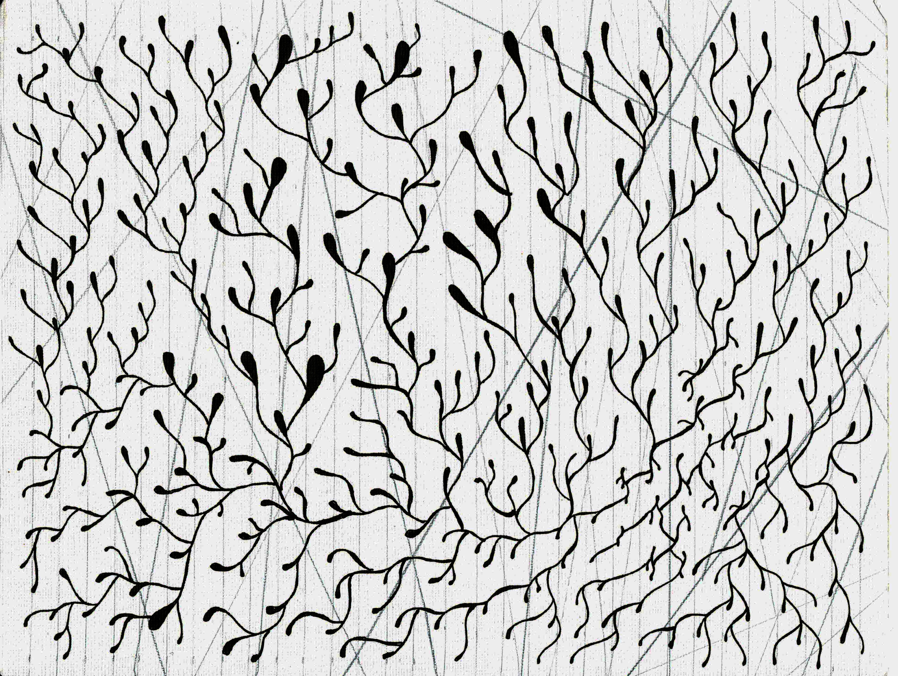

Cuerpo entorno | Autoetnografía visual
La cámara no sólo registra, sino que también genera sensaciones. El paisaje abandona el fondo, y se convierte en interlocutor.

La cámara no sólo registra, sino que también genera sensaciones. El paisaje abandona el fondo, y se convierte en interlocutor.
